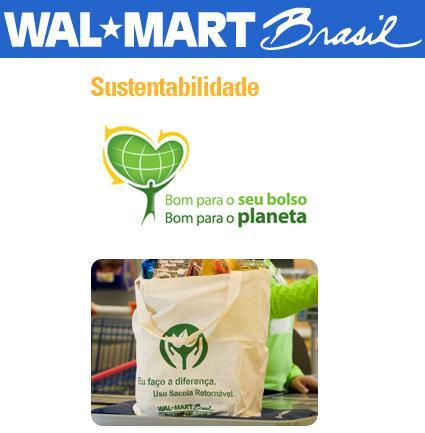
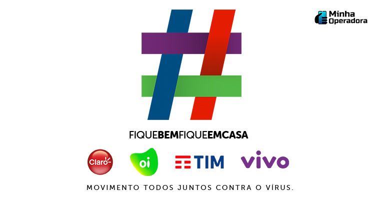

empresas em rede
Empresa em rede é um termo usado para designar novos modelos de empresas modernas. Diferentemente de uma empresa sistêmica, uma empresa em rede é organizada de forma reticular, ou seja, virtualmente ou em tela.
Em uma empresa em rede predomina a interação da informação, a comunicação descentralizada e o relacionamento colaborativo. Uma teia imaginária permite a relação entre todos os membros da empresa, internos e até externos, como fornecedores e consumidores, que cada vez mais interagem e participam dos processos de uma empresa moderna.
alguns exemplos de empresas que adotam esse modelo e que têm obtido sucesso:
-
Apple + Google no desenvolvimento da internet 6G
Neste exemplo de organizações em rede, temos duas gigantes da tecnologia. Recentemente a Apple e a Google se juntaram ao Next G Alliance, grupo voltado para o desenvolvimento da internet 6G.
Também participam dessa aliança o Facebook, a Microsoft, a Samsung e várias outras empresas do ramo de tecnologia.
-
Walmart e o compromisso com a sustentabilidade
O Walmart é um exemplo de organização que opera em rede. A multinacional recorre a pessoas de dentro e de fora da empresa a fim de encontrar soluções para para diferentes problemas como, por exemplo, a implementação de práticas ecologicamente sustentáveis.
Dessa forma, o Walmart consegue adotar abordagens inovadoras para reduzir o impacto ambiental.

-
Vivo + Claro + Oi + TIM na pandemia de Covid-19
Outro exemplo de organizações operando em rede pôde ser observado nos primeiros meses de pandemia de Covid-19 no Brasil.
As quatro maiores empresas de telefonia se juntaram para a campanha #FiqueBemFiqueEmCasa.
Na intenção de incentivar o isolamento social para conter a contaminação do vírus, as companhias adotaram iniciativas para facilitar a comunicação entre as pessoas, como:
-
Bônus de dados de navegação;
-
Liberação de conteúdos de entretenimento;
-
Navegação sem consumo de dados no aplicativo coronavírus SUS

 Voltar
Voltar
Developed by:Vinicius,Yago,Gustavo,Leticia,Tayssa,Isabela